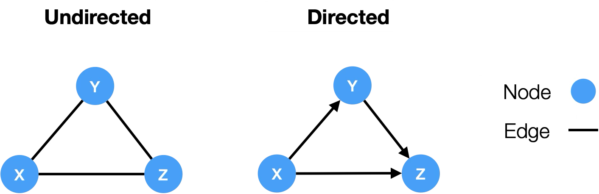
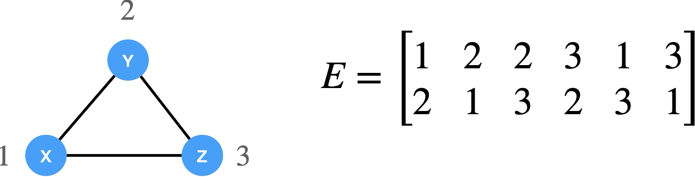
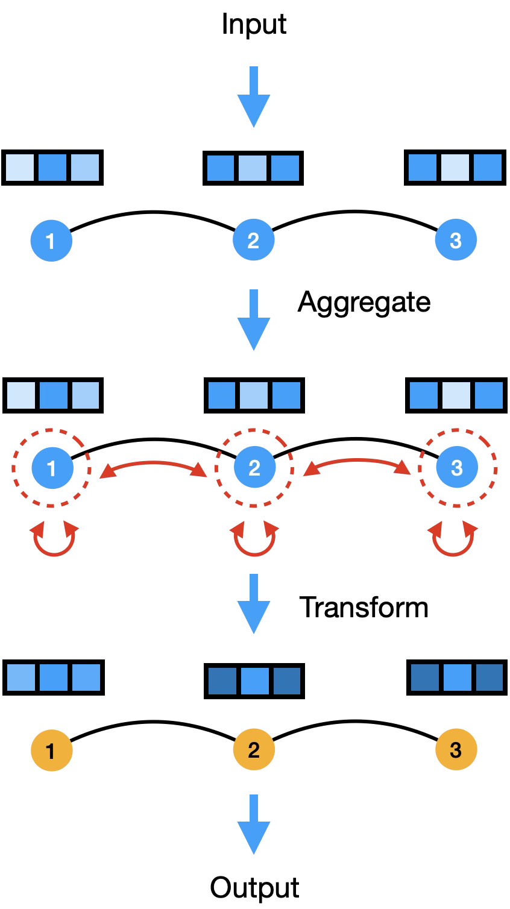
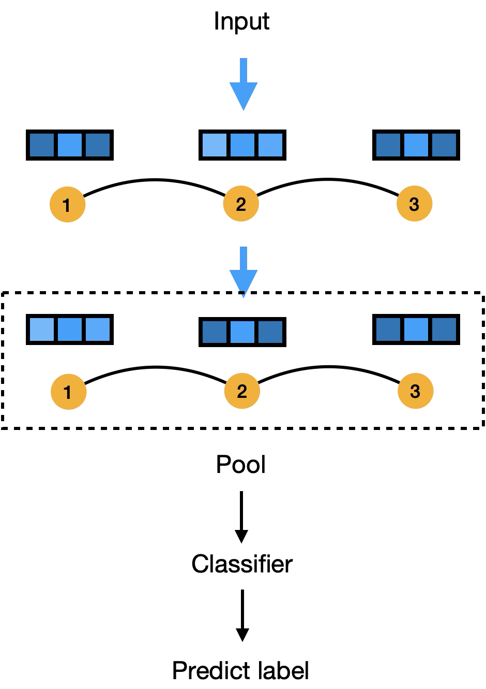

The graph arc · PHM5005 09 · mock
Three picked slots, 94 → 95 → 97 in the lessons' order, the leading figures of each drawn at the widget's 550px.
Molecules, 2-D coordinates, scaffolds and one split's similarities come from graph-arc-mock-data.json, which
_lab/graph-arc-export.py writes with RDKit from the lesson's own file; the 10-seed numbers from
graph-arc-measure.py (§0). Everything else is computed on this page. The mock draws filled states so they
can be judged; a widget opens empty. On-canvas strings are candidates for the copy audit, not copy. Blue-ruled boxes are
my recommendations, grey-ruled ones the calls only you can answer (§5), red-ruled ones what the lesson says (§4).





Your figures, which the arms below follow: nodes as filled circles with a name, a node's features as a row of cells above it, a dashed ring for what a node gathers, a bracket from related molecules to their scaffold.
0 · What the measurement found
1 · Slot 94 graph-representation — a graph as tables, and a molecule as a graph (09-1 cells 1–4, 25; 09-2 cells 1, 9–17)
Graph page. Left: your triangle, undirected and directed, with the adjacency matrix and the edge list
numbered from 0 as PyG numbers them (your figures number from 1; §5.3). One edge is picked: its two cells in A and
its column(s) in edge_index light together. Right: 09-1 cell 25's four proteins, their x and
edge_index, then the same graph with the nodes numbered in another order — every table changes, the
graph does not.
Molecule page. Caffeine (09-2 cell 6). The SMILES string above the graph, each atom's character carrying the atom's number; a bond picked lights its two characters and how far apart they sit. Below: the tensors cell 11–13 builds. Right: four of the 1,232 different strings RDKit writes for caffeine in 5,000 tries, all one graph.
Two pages, Graph · Molecule. The claim measured on the lesson's file: every one of the 2,334
molecules that parse comes back identical through RDKit's canonical SMILES, so the string loses no bond; but 29% of
the 58,760 bonds join atoms that are not next to each other in the string, 11% join atoms more than five apart, the
furthest 118. In caffeine 6 of 15 bonds are non-adjacent; the ring-closure bond (atoms 13–1) spans 12. What a graph
adds is that each bond is an entry in edge_index however the string was written.
2 · Slot 95 message-passing — gather, stack, pool (09-1 cells 22–25; 09-2 cells 39–42, 62–64)
Aggregate page. Arm A is your dl-layer-gnn.png computed: three nodes, three features,
node 2's new row the weighted sum of itself and its neighbours (GCN's 1/√(didj), self-loops
counted). Arm B is the same step on caffeine, one atom and the weights on its bonds: GCN's fixed by degree, against GAT's
α (untrained weights here, so only their form is meaningful).
Layers page. What atom 0 (caffeine's first methyl carbon) has gathered from after k layers; the lesson stacks two. Right: how alike the atoms' vectors become with depth — mean pairwise cosine distance, 1 when the vectors are unrelated, 0 when every atom carries the same vector.
Readout page. After two layers each atom's vector is fixed by what it has seen; atoms that saw the same thing get the same vector (coloured alike). Pooling turns the molecule's atoms into one vector. Arm A is the lesson's own data: suberic acid (8 carbons, inactive) against azelaic acid (9, inactive) — one more middle CH₂. Arm B is the all-alike pair: cyclopropane against cyclohexane.
Three pages, Aggregate · Layers · Readout, GCN against GAT a control on Aggregate (96 folded in). Measured: caffeine's diameter is 6, so atom 0 needs six layers to have gathered from all 14 atoms; two layers reach 42% of caffeine's atom pairs and 29% of the pairs in the average molecule of the lesson's file (median diameter 10, the largest 51). With random weights and ReLU the atoms' vectors in caffeine fall from a cosine distance of 1.03 to 0.09 by five layers; propagation alone, to 0.19 by twelve. The lesson pools with max, and after two layers four pairs in its file are identical under max pooling and differ under mean and sum — chain-length homologues, as arm A. No pair is identical under mean pooling with the lesson's atom features.
3 · Slot 97 scaffold-split — a scaffold, and two ways to split (09-2 cells 18, 23–30)
Scaffold page. Three quinolones from the lesson's file, all three active. A Murcko scaffold keeps the rings and the chains joining them and removes everything else (dimmed). Ciprofloxacin and gatifloxacin share a scaffold; norfloxacin has an ethyl where they have a cyclopropyl ring, and the ring is part of the scaffold — so norfloxacin is a different group, and a scaffold split may put it on the other side from its relatives.
Split page. Every test molecule's similarity (Tanimoto on Morgan fingerprints, radius 2) to the most similar molecule in its training set, under a random split (above) and a scaffold split (below), seed 0, 20% of the file (or of its scaffolds). Actives are the dots. Right: what a model scores on each, over ten seeds.
Two pages, Scaffold · Split. Measured over ten seeds: under a random split 21% of test molecules
have a training molecule above 0.7 similarity, under a scaffold split 6%; a random forest on the fingerprints scores AUC
0.89 against 0.84 and finds 54% of test actives against 42%. But the scaffold split does not separate the actives'
families: 60% of test actives still have an active as their most similar training molecule (57% under a random split),
because families such as the quinolones span several scaffolds. And the scaffold split's test set moves from 324 to 689
molecules with the seed, because test_size counts scaffolds and benzene alone is the scaffold of 278
molecules.
4 · What the lessons say, for you to fix
- 09-1 cell 25's GCN is a plain mean over neighbours without the node itself; 09-2 cell 40 gives what
GCNConvcomputes (self-loops, 1/√(didj)). - 09-2 cell 40: GCN carries bond type implicitly through connectivity —
GCNConvnever seesedge_attr; a single and a double bond are the same edge to it. - 09-2 cell 32:
ATOM_VOCAB = list(atoms_set)can order the one-hot columns differently in every Python session;sorted(atoms_set). - 09-2 cell 28:
GroupShuffleSplit(test_size=0.2)takes 20% of the scaffolds, not the molecules. - 09-2 cell 18's label split is usually called a random (stratified) split.
- The lesson's test set holds 5 actives (173 molecules, 2.9% active); its split is 1,960 / 202 / 173, not 80 / 10 / 10. The test F1 in cells 57 and 79 rests on five molecules.
- 681 of 2,334 molecules (29%) are salts (
.Cl,.[Na+], …): the counter-ion becomes a separate piece of the graph, no message crosses to it, and max pooling includes its atoms. - One SMILES does not parse (an aluminium sucrose sulfate);
MoleculeDatasetdrops it, sodf.iloc[test_idx[idx]]in cell 92 can name the wrong molecule if it falls before the chosen index. dl-graph-molecule-scaffold.pnglabels the top molecule 2-methyindole but draws the methyl at position 3 (3-methylindole, skatole); and methyindole lacks an l.- 09-1 cell 3 numbers the nodes from 1 (X: 1, Y: 2, Z: 3, as your figures do); cell 25 and PyG number from 0.
5 · The calls
5.1 · 94's pages A · Graph · Molecule (recommended) | B · Molecule only; the triangle and the tables as its first press
5.2 · 94's molecule A · caffeine, the lesson's (recommended) | B · a Molecule control over caffeine, ciprofloxacin and one small salt from the file
5.3 · Numbering
A · from 0 everywhere, as PyG and cell 25 (recommended: edge_index is what the reader types) | B · from 1 on the Graph page, as your figures and cell 3
5.4 · How atoms are drawn A · as nodes, a filled circle with its element, every atom including carbon (recommended: the arc is about nodes) | B · as a chemist draws them, carbons unlabelled, as RDKit and your scaffold figure
5.5 · 95's pages A · Aggregate · Layers · Readout (recommended) | B · Aggregate · Layers; pooling as a note
5.6 · 95's Aggregate stage A · your three-node chain only | B · your chain first, then caffeine (recommended: the chain reads, caffeine is where degree differs) | C · caffeine only
5.7 · 95's GAT A · a Layer control GCN · GAT on Aggregate, the weights on the bonds changing (recommended) | B · GCN only
5.8 · 95's weights A · untrained, seeded: hops, smoothing and pooling are properties of the graph and the layer, not of training (recommended) | B · a small GCN trained in the page on a toy task
5.9 · 95's Readout pair A · the lesson's suberic and azelaic acid, under the lesson's max pooling (recommended) | B · cyclopropane and cyclohexane | C · both, a Pair control
5.10 · 97's data A · the lesson's 2,334 molecules, precomputed (fingerprints, scaffolds, split results) — if the file's terms allow it to be shown publicly; the FinGAT repository carries no licence I have checked yet, and the molecules come from Stokes et al. 2020 (recommended, once checked) | B · simulated families that behave the same way
5.11 · 97's model A · scores computed ahead, a random forest on fingerprints per seed and split, as 70's Rank table (recommended) | B · nearest neighbour live in the page (weak: AUC 0.64 random, 0.46 scaffold)
5.12 · 97's claim, after the measurement A · the similarity histogram leads and the score follows: a scaffold split removes shared ring systems and the score drops; the quinolones on the Scaffold page show what it does not remove (recommended) | B · the score only
5.13 · Slugs and titles
graph-representation · message-passing · scaffold-split; titles in the DL prefix,
as 83–87: Deep Learning - Graphs: Representation · Deep Learning - Graphs: Message Passing ·
Deep Learning - Graphs: Scaffold Split — yours to rename; a slug is a public URL.
5.14 · Colours, as drawn
a node --surface-2 ringed in ink · the picked node or bond --c-highlight · its neighbours
--c-group-a · atoms alike after two layers --c-cluster-a…f · a node's features
--c-magnitude ramp · random split --c-group-a, scaffold split --c-group-b · an
active --c-event · the side chain a scaffold removes --ink-3. Any to change?
6 · The rails, as proposed
The step control's name follows name-the-page-control: Step on all three.